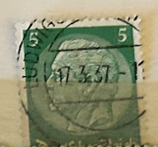
| SOURCE | TITLE| IMAGE MATCH | click to source page |
| eBay | VINTAGE ~ U.S. Postage Stamp ~ George Washington ~ One Cent (1¢) Green ~ 1910's | eBay | 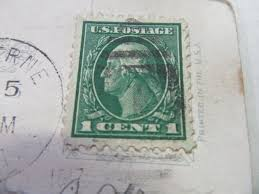 |
| Alamy | GERMANY - CIRCA 1928: A stamp printed in Germany (Deutsches Reich), shows a portrait of the 1th President of the German Reich Friedrich Ebert, circa 1928 Stock Photo - Alamy | 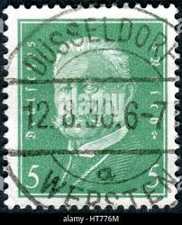 |
| Poppe Stamps | Poppe Stamps: German Federal Republic, 1954, 1109, Presidents - stamps for sale by theme and country |  |
| Alamy | GERMANY - CIRCA 1928: A stamp printed in Germany (Deutsches Reich), shows a portrait of the President of the German Reich Paul von Hindenburg, circa 1928 Stock Photo - Alamy | 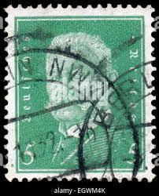 |
| 123RF | MOSCOW, RUSSIA - APRIL 2, 2017: A Post Stamp Printed In Deutsches Reich Shows Friedrich Ebert (1871-1925), 1st President Of The German Reich, Circa 1929 Stock Photo, Picture and Royalty Free Image. Image 92007574. | 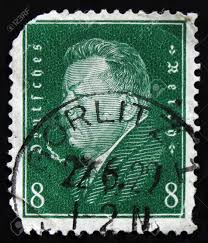 |
| eBay | 1 Cent Colorado Used US Stamps (1901-Now) for sale | eBay | 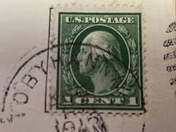 |
| Etsy | US 1913 1c Washington Stamp on New Year's Post Card, Grill Cancel Dec. 25,1913 - Etsy Australia | 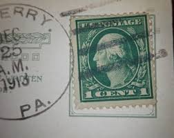 |
| eBay | Germany - 1959 - 10Pfg - Professor Dr. Th. Heuss - #17943 | eBay | 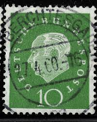 |
| eBay | Green 1/- Denomination British Stamps | eBay | 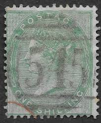 |
| HipStamp | France #542 Marianne Used CV$0.30 | Europe - France & Colonies, General Issue Stamp / HipStamp | 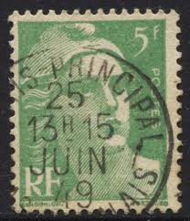 |
| I'm from Kansas this stamp collection is barely that to fill a small envelope they came from a couple who traveled the world and they had passed away the house was bought | 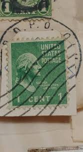 | |
| HipStamp | Germany 353 1927 Used | Europe - Germany & Colonies - Germany, General Issue Stamp / HipStamp | 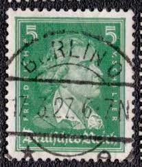 |
| eBay | Early 1900s Embossed Valentine Postcard with 1 cent stamp | eBay | 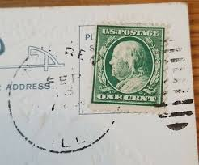 |
| eBay | BEN FRANKLIN VINTAGE ONE CENT STAMP "EXTREMELY RARE"-USED . ON POST CARD, 1900S | eBay | 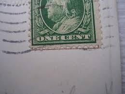 |
| BidCurios | USA - 4x Used stamps (Block) - Freedom of Speech - (B-002/M2)h - BidCurios | 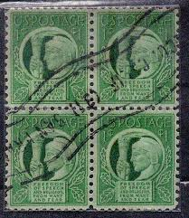 |
| eBay | US O64 15c State Department Used w/ Washington Indigo Ellipse "L" Fancy Cancel | eBay | 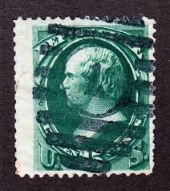 |
| eBay | Pennsylvania Green Machine Cancel US Postal History Covers for sale | eBay | 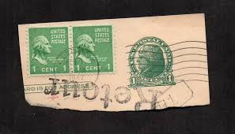 |
| eBay | 1916 Gibson Art VALENTINE POSTCARD Postmarked FEB. 14, 1916 Genoa IL w 1 c stamp | eBay | 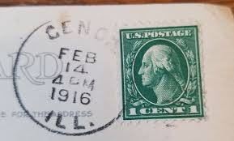 |
| eBay | US POSTAGE ~ Four Freedoms ~ Green 1₵ Stamp ~ Cancelled/Posted ~ c.1943 ~ 001 | eBay | 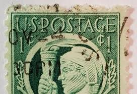 |
| eBay | 1909 Valentine Postcard - 1 cent stamp 1910 postmark | eBay | 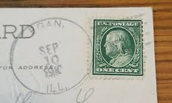 |
| eBay | VINTAGE US POSTAL STAMP 1cent CANCELED GEORGE WASHINGTON PROFILE GREEN (1911-19 | eBay | 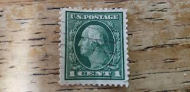 |
| HipStamp | Germany; 1959: Sc. # 794: Used Single Stamp + | Europe - Germany & Colonies - Germany, General Issue Stamp / HipStamp | 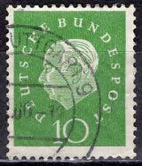 |
| HipStamp | United States-1943-Sc# 908 Freedom Speech & Religion-Mnh Imprint Plate Block | United States, General Issue Stamp / HipStamp | 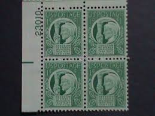 |
| eBay | George Washington One Cent USPS Stamp 1917 Green Rare Easter Postcard Rare GA | eBay | 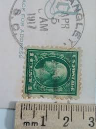 |
| eBay | VINTAGE 1922 Green 1 Cent George Washington Postage Stamp Affixed to Post Card | eBay | 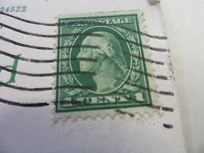 |
| eBay | GERMANY ~ Deuirches Reich ~ Green Stamp 5 Heller ~ Cancelled/Posted ~ c.1934 ~01 | eBay | 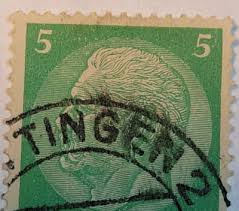 |
| eBay | Fancy Cancel 3 Cent Green Used US Stamps (19th Century) for sale | eBay | 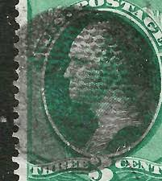 |
| eBay | Scott #147 1870-71 SON Fancy Cancel MSP10-42 | eBay | 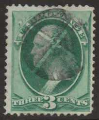 |
| Was this building always a YMCA? | 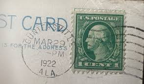 | |
| eBay | US #184 (1878) 3c-Used-Grade: VF-George Washington -EFO: Misperf at Top | eBay | 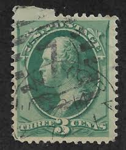 |
| eBay | Fancy Cancel 3 Cent Purple United States Stamps for sale | eBay | 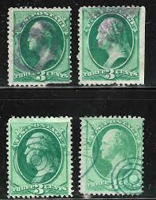 |
| eBay | Birthday Greetings Dated 2-20-1915 Embossed Litho Postcard A2008085255 | eBay | 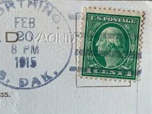 |
| eBay | Mount Vernon, Home Of Washington, On The Shore Of The Potomac, VA - 1955 | eBay | 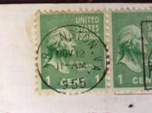 |
| eBay | Rare George Washington 1 Cent US Postage Stamp. 1912-1922 | eBay | 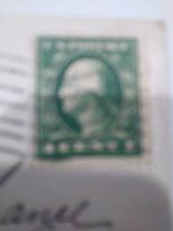 |
| eBay | Rare:United States Postal Service One Cent Stamp | eBay | 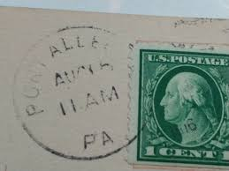 |
| mercator.direct | GB Queen Victoria 1s GREEN, W 20, Plate 1 = Plate 2, (SG 90) | 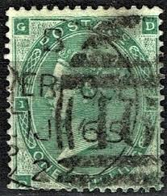 |
| eBay | K10 in Europe | eBay | 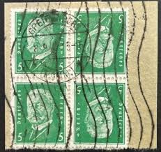 |
| eBay | Mitteilung 1929 Fa. Stuffmann & Co., Haan Kr. Kreises Mettmann NRW | eBay | 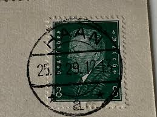 |
| Etsy | Collector Stamps ~ French Colonies Scott # 19 USED Single - Etsy | 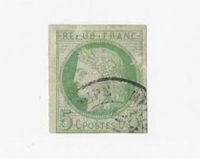 |
| HipStamp | Germany: SC#353 5 Rpf Friedrich von Schiller (1926) Used | Europe - Germany & Colonies - Germany, General Issue Stamp / HipStamp | 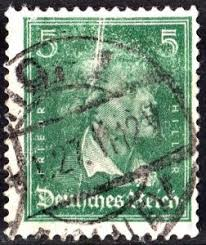 |
| San Jose Stamp Club | Visit our website at: Visit our website at: filatelicfiesta.org filatelicfiesta.org Meetings Programs | 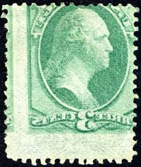 |
| eBay | CANADA Postage ~ King George VI ~ Green ½₵ Stamp ~ Cancel/Posted ~ 1937 ~ Y05 | eBay | 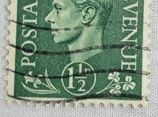 |
| Naval Cover Museum | ARKANSAS BB 33 - NavalCoverMuseum | 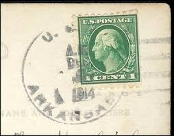 |
| eBay | Andrew Jackson 1 Cent U.S. Postage Green | eBay | 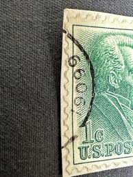 |
| eBay | Republique de Francaise Postes ~ Green 5₵ Stamp ~ Cancelled/Posted - 1951 ~ C111 | eBay | 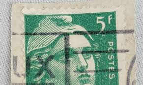 |
| eBay | Germany 1931 - Deutsches Reich - Used 2 Stamps on Postal Card | eBay | 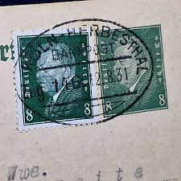 |
| PicClick CA | GERMAN CANCELLED POSTAGE Stamp / Timbre allemand Oblitere 20 pf Deutsches Reich $1.62 - PicClick CA | 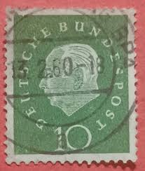 |
| eBay | USA - 1943 - Four freedoms - 1C - #01 | eBay | 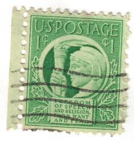 |
| Genealogy Trails | Chippewa County Michigan Genealogy & History | 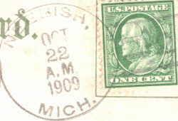 |
| eBay | Vintage Circa 1909 Orwell NY Souvenir Postcard Embossed With Original Stamp. | eBay | 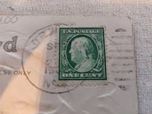 |
| postbeeld.com | Stamps from France - PostBeeld - Online Stamp Shop - Collecting | |
| eBay | Rare Green Line 1 cent George Washington Stamp one cent on Postcard vintage | eBay | |
| eBay | U.S. - 408 - Plate Number Single (6013) - JUMBO - Used | eBay | |
| eBay | MOMEN: US STAMPS #383 LINE PAIR USED SUPERB GEM LOT #73709 | eBay | |
| eBay | 408 Used Pair w/Guide Line PSE Graded 100, Cert # 01293577 | eBay | |
| eBay | BestWishesForA Joyous Birthday Dated 11-1910 Embossed Litho Postcard A2254082218 | eBay | |
| eBay | LEAV. & TOPEKA R.P.O. EAST RAILROAD LADY BUG SPIDER WEB | eBay | |
| eBay | 1929 Rare Vintage Victor Emmanuel III 25 Cent Collector Stamp Poste Italiane | eBay |  |
| eBay | B&D: 1873 U.S. Scott 158 3c green Washington Cont'l Banknote Co.--SOTN sun cxl | eBay | |
| PICRYL | Saar 1947 230 Abstich am Hochofen - PICRYL - Public Domain Media Search Engine Public Domain Search |